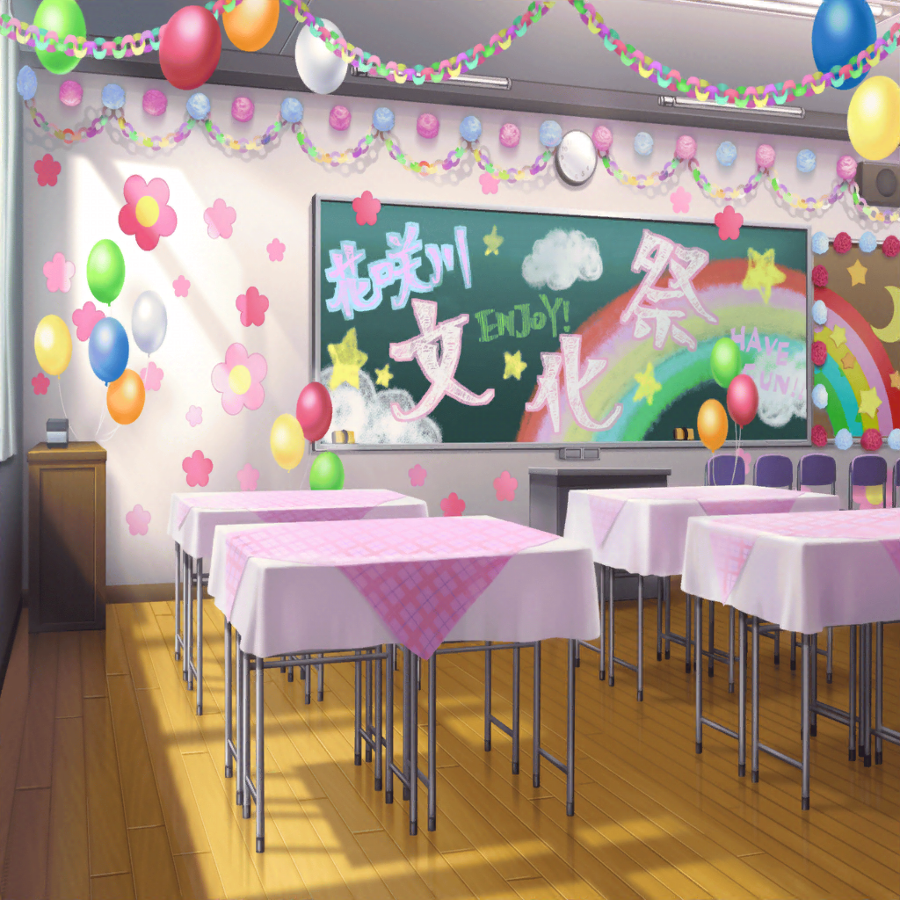

文化祭当日
山吹家 リビング
沙綾の母
おはよう、沙綾。文化祭、楽しみだね
沙綾
うん……
沙綾の母
？ 元気ないけど、どうしたの？
沙綾
う、ううん、なんでもない！
沙綾の母
それならいいけど……
あとで純達と遊びに行くから、がんばってね
沙綾の母
あ、そうだ。沙綾にこれが届いてたよ。
朝、ドアに挟まってたの
沙綾
手紙？ 香澄から……？
沙綾
母さん、これ……えっ？
大丈夫！？ 顔色悪いよ！？
沙綾の母
ううん、平気……
ちょっと休めば大丈夫だから……
沙綾
！ 母さん！

花咲川女子学園 廊下
りみ
沙綾ちゃん、来ないね……？
たえ
香澄、家行ったんだよね？
香澄
うん、ちょっとだけ……
クラスメイト
みんな、パン届いたよー！
運ぶの手伝って！
香澄
あ、うん！ 今行くー！

香澄
おはようございます！
沙綾の父
おはよう、香澄ちゃん。
パンの受け取りのサインをもらっていいかな？
香澄
はい。……あの、さーやは？
沙綾の父
それが、今朝妻が倒れてね
香澄
ええっ！？
沙綾の父
ああ、大きな病気というわけじゃないよ。
妻は昔から貧血気味で、よくあることなんだ
沙綾の父
ただ、沙綾が心配して、病院に連れて行くと聞かなくて。
今日は文化祭には出ずに、妻の付き添いをするそうだ
香澄
そうなんですか……
沙綾の父
前に妻が倒れた時のことをあの子は気にしていてね。
自分がそばにいなくて、弟と妹に怖い思いをさせてしまったから
沙綾の父
家のことは気にせず、好きなことをしてほしいんだが……
ああ、でも最近はよく香澄ちゃん達の話をしているよ
香澄
え？
沙綾の父
君達といるのが楽しいみたいだよ。
放っておくと家のことばかり気にしてしまう子だから、
これからもあの子を気にかけてもらえるかい？
香澄
はい！ もちろんです！
あの、さーやにこっちは大丈夫だって、伝えてください！
沙綾の父
ああ、伝えておくよ。
ありがとう、香澄ちゃん

花咲川女子学園 1-A教室
香澄
いらっしゃいませー！
1-Aカフェで休憩していきませんか〜！
花咲川の生徒
わあ、このパンおいしー！
香澄
山吹ベーカリーのパンです！
何個でも食べられちゃいますよ！
花咲川の生徒
おすすめはどれ？
香澄
ん〜、メロンパン、クリームパン、
チョココロネ、あんパン、ミルクデニッシュ……
花咲川の生徒
あはは、それって全部ってこと？
香澄
えへへ！ はい、全部です！
りみ
あ、あれ？ また失敗しちゃった。
うう、ラテアートうまくできない〜
たえ
かわいい、たぬきだ
りみ
パンダだったんだけど、変顔になっちゃった……
たえ
でも、すごくかわいい
りみ
わぁ〜、写真撮らないで〜
たえ
文化祭の思い出は残しておかないと。
せっかくお父さんにカメラ借りてきたんだし
たえ
そうだ、香澄の写真も……
香澄
…………
たえ
……沙綾のこと？
香澄
うん、気になっちゃって
りみ
沙綾ちゃんなら、きっと大丈夫だよ
香澄
……うん、そうだよね！
香澄
沙綾の分までクラスを盛り上げないと！
みんなでぜったいぜったい大成功させよう！
りみ・たえ
うん！